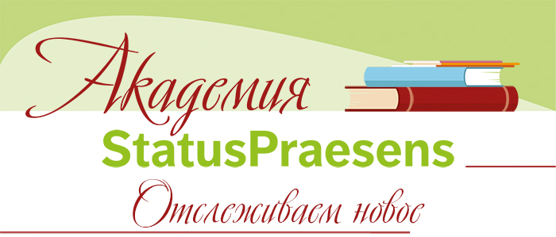

<!DOCTYPE html>
<html lang="en">

<head>
    <meta charset="UTF-8">
    <meta name="viewport" content="width=device-width, initial-scale=1.0">
    <title>Document</title>
    <link href="https://fonts.googleapis.com/css2?family=PT+Sans&family=PT+Serif&display=swap" rel="stylesheet">
    <style>
        *,
        *:after,
        *:before {
            box-sizing: border-box;
        }


        html {
            font-size: calc(10 / 1540 * 100vw);
        }

        body {
            max-width: 70rem;
            font-size: 1.9rem;
            font-family: 'PT Serif', serif;
            color: #445c92;
            /* padding: 5rem; */
            margin: 0 auto;
        }

        main {
            z-index: 10;
        }

        .div {
            position: relative;
            display: flex;
            flex-direction: column;
            align-items: center;
            justify-content: center;

        }

        .div1 {
            display: flex;
            flex-direction: column;
            align-items: flex-start;
            justify-content: flex-start;
            position: relative;

        }

        .img1 {
            width: 100%;
        }

        .img2 {
            position: absolute;
            right: 0;
            top: 26.5rem;
        }

        .div2 {
            background-color: #e6efcc;
            width: 63.6rem;
            position: relative;
            top: 10rem;
            padding: 1.5rem 3rem 2rem 3rem;
        }

        .img3 {
            position: relative;
            left: 50%;
            right: 50%;
            transform: translate(-50%, -50%);
            top: 14.5rem;
        }

        .p {
            margin: 0;
            position: relative;
            left: 50%;
            right: 50%;
            transform: translate(-50%, -0%);
            text-align: center;
        }

        .p2 {
            display: block;
            margin-top: 1rem;
            text-align: justify;
        }

        .div3 {
            position: relative;
            top: 8rem;
            max-width: 70rem;
            display: flex;
            flex-direction: row;
            width: 63rem;
            z-index: 10;
            color: white;
            font-family: 'PT Sans', sans-serif;
        }

        .img4 {
            position: absolute;
            top: 79rem;
            right: 3.2rem;

        }

        .div4 {
            position: relative;
            top: 20rem;
            color: #a01918;
            font-family: 'PT Sans', sans-serif;
        }

        .p3 {
            position: absolute;
            left: 4.2rem;
            top: 2.5rem;
            text-align: center;
        }

        .p4 {
            position: absolute;
            left: 50%;
            transform: translate(-50%, -0%);
            top: 2.5rem;
            text-align: center;
        }

        .p5 {
            position: absolute;
            right: 3rem;
            top: 2.5rem;
            text-align: center;
        }

        .div5 {
            position: relative;
            top: 18rem;
        }

        .div6 {
            background-color: #ededed;
            width: 63.6rem;
            position: relative;
            top: 17rem;
            padding: 0.5rem 3rem 4rem 3rem;
        }
        }

        .p6 {
            display: block;
            max-width: 40rem;
            margin: 0;
            position: relative;
            left: 50%;
            right: 50%;
            transform: translate(-50%, -0%);
            text-align: center;
        }

        .a {
            position: absolute;
            right: 3.5rem;
            bottom: 2.5rem;
            font-family: 'PT Sans', sans-serif;
        }

        a,
        a:visited {
            color: inherit;
        }

        a:hover {
            text-decoration: underline;
            color: #a01918;
        }

        .div7 {
            position: relative;
            top: 19rem;
        }

        .div8 {
            background-color: #ededed;
            width: 63.6rem;
            position: relative;
            top: 18rem;
            padding: 0.5rem 3rem 4rem 3rem;
        }

        .div9 {
            position: relative;
            top: 22rem;
        }

        .div10 {
            background-color: #fef2f3;
            width: 63.6rem;
            position: relative;
            top: 21rem;
            padding: 0.5rem 3rem 4rem 3rem;
            font-size: 1.6rem;
        }

        .p6 {
            font-size: 1.2rem;
            font-family: 'PT Sans', sans-serif;
            line-height: 140%;

        }

        .p7 {
            max-width: 40rem;
        }

        .img6 {
            position: absolute;
            right: 2rem;
        }

        .footer {
            display: flex;
            flex-direction: column;
            background-color: #95c11f;
            position: relative;
            bottom: 0;
            color: white;
            height: 20rem;
            z-index: 2;
        }

        .footer {
            display: flex;
            flex-direction: row;
        }
    </style>
</head>

<body>
    <main>
        <div class="div">
            <div class="div1">
                
                
            </div>
            <div>
                
            </div>
            <div class="div2">
                <p class="p">Дорогие коллеги! Друзья!</p>
                <p class="p">НЕТ ИНФОРМАЦИОННОМУ КАРАНТИНУ!..</p>
                <p class="p2">

                    Всеобщая самоизоляция имеет и положительные следствия: есть время и возможность что-то написать
                    и&nbspчем-то
                    поделиться. Журнал SP решил освоить формат информационного агентства: наша <b>информрассылка
                        «Академия
                        SP:
                        отслеживаем новое»</b> призвана доставлять нашей аудитории самые актуальные, злободневные
                    и&nbspинтересные
                    новости по очень разным клиническим темам (и&nbspне только по коронавирусу).

                </p>
            </div>
            <div class="div3">
                <p class="p3"><b>Несколько <br>раз в неделю!</b></p>
                <p class="p4"><b>Лучшие <br>журналисты SP!</b></p>
                <p class="p5"><b>Увлекательно, <br>просто, полезно.</b></p>
            </div>
            <div>
                
            </div>
            <div class="div4">
                <p class="p2">
                    <b>Впрочем, как всегда!..</b>
                </p>
            </div>
            <div class="div5">
                
            </div>
            <div class="div6">
                <p class="p"><b>Коронавирусная инфекция: чем лечить? <br>27 марта 2020 года</b></p>
                <p class="p2">

                    И&nbspвсё равно начнём с&nbspкоронавируса. 27 марта 2020 года Минздрав выпустил в&nbspсвет новые
                    временные
                    методические рекомендации по профилактике, диагностике и&nbspлечению новой коронавирусной инфекции
                    (COVID-19; название собственно вируса, а&nbspне заболевания — SARS-CoV-2). Самое важное:
                    в&nbspдокументе
                    уточнены наконец подходы к&nbspмедикаментозному лечению этого грозного заболевания.

                </p>
                <a href="
            https://veroniii.github.io/statusp/
            " target="_blank" el="noopener noreferrer" class="a">
                    Подробнее
                </a>
            </div>
            <div class="div7">
                
            </div>
            <div class="div8">
                <p class="p"><b>Ждём обновления клинических рекомендаций по МГТ. <br>Будет ли место альтернативным
                        средствам?</b></p>
                <p class="p2">

                    Вирус вирусом, а&nbspклиническая работа важна по-прежнему!..Обновление российских клинических
                    рекомендаций
                    по&nbspМГТ и&nbspсохранению здоровья женщин зрелого возраста идёт полным ходом; выход в&nbspсвет
                    запланирован на&nbspвесну 2020 года. Прежние рекомендации датируются 2015 годом, и&nbspдавно
                    нуждаются
                    в&nbspпересмотре, поскольку
                    накопилось много новых данных.

                </p>
                <a href="https://veroniii.github.io/statusp/second" target="_blank" el="noopener noreferrer" class="a">
                    Подробнее
                </a>
            </div>
            <div class="div9">
                
            </div>
            <div class="div10">
                <p class="p"><b>Ждём обновления клинических рекомендаций по МГТ. <br>Будет ли место альтернативным
                        средствам?</b></p>
                <p class="p2">

                    В&nbspсвязи с&nbspбольшим интересом к&nbspнегормональным средствам перспективным может оказаться
                    новый
                    инструмент
                    врачебной работы — БАД «Фемо-Клим»1,2. Это довольно удачное сочетание β-аланина, глицина, витамина
                    B6
                    и&nbspтрав с&nbspэстрогенной активностью (экстрактов красного клевера, корня солодки и листьев
                    шалфея),
                    а также
                    ещё одного любопытного компонента — трутневого расплода.
                    Красный клевер — важный компонент препарата, источник фитоэстрогенов со&nbspвсем спектром
                    положительных
                    эстрогеноподобных эффектов3. Ему «ассистирует» содержащий энтомологические гормоны пчёл трутневый
                    расплод, который стимулирует продукцию собственных половых стероидов в организме пациенток4.
                    По&nbspданным
                    группы исследователей под руководством проф. В.И. Струкова, этот эффект препятствует развитию
                    основных
                    возраст-ассоциированных заболеваний: остеопороза, атеросклероза, ИБС5.
                    Компоненты «Фемо-Клима» восстанавливают баланс андрогенов, дефицит которых может быть ассоциирован
                    с&nbspвозникновением приливов6. Действие ключевых компонентов препарата усилено аминокислотой
                    β-аланином. Этот
                    нейромедиатор закрепляет «точку закипания» центра терморегуляции гипоталамуса на&nbspболее высоких
                    значениях, поэтому организм перестаёт воспринимать нормальную температуру тела как повод для
                    активизации
                    потоотделения7. Глицин — вещество, обладающее лёгким седативным воздействием, улучшает
                    психоэмоциональное состояние пациенток (равно как витамин B6, солодка и&nbspшалфей).
                    Исследования этого перспективного БАДа идут полным ходом, и&nbsp«Академия SP» с удовольствием
                    расскажет
                    об
                    их результатах. Между тем уже сейчас эксперты Роспатента высоко оценили «Фемо-Клим» и&nbspвнесли его
                    в&nbspсписок 100 лучших изобретений России.

                </p>
                
                <p class="p7">
                    Внимание! Компания «Парафарм» сообщает: в&nbspсвязи с&nbspпереносом или отменой профильных выставок
                    каждый врач
                    может бесплатно получить образец «Фемо-Клима» и&nbspдайджест посвящённых ему научных работ, отправив
                    заявку
                    по&nbspViber,
                    WhatsApp +7 (902) 354 4137 или&nbspпо&nbspэлектронной почте pos@osteomed.su.

                </p>
                <p class="p6">
                    Литература
                    <br>1. Петрова Е., Калистратов В., Полубояринов В. и др. Применяемый при климаксе препарат Фемо-Клим
                    —
                    лучшее негормональное решение гормональных проблем // Врач. — 2019. — №30 (1). — С. 46–48.
                    <br>2. Потупчик Т. Возможности применения препарата Фемо-Клим в климактерическом периоде // Врач. —
                    2019. —
                    №30 (8). — С. 80–85.
                    <br>3. Сорокина А. Альтернативные методы коррекции менопаузальных нарушений // Врач. — 2019. — №30
                    (9).
                    — С.
                    78–84.
                    <br>4. Sawczuk R., Karpinska J., Miltyk W. What do we need to know about drone brood homogenate and
                    what
                    is
                    known // J. Ethnopharmacol. — 2019. — Vol. 245. — P. 111581. [PMID: 30391708]
                    <br>5. Струков В.И., Бурмистрова Л.А., Елистратов Д.Г. и др. Остеопороз: диагностика и эффективное
                    лечение
                    // Врач. — 2014. — №4. — C. 52–54.
                    <br>6. Notelovitz M. Hot flashes and androgens: A biological rationale for clinical practice // Mayo
                    Clin.
                    Proc. — 2004. — Vol. 79. — Suppl. 4. — P. S8–S13. [PMID: 15065632]
                    <br>7. Овсянникова Т.В., Макаров И.О., Куликов И.А. Клиническая эффективность негормональных методов
                    терапии
                    у женщин в перименопаузе // Акушерство, гинекология и репродукция. — 2013. — №3. — С. 26–29.

                </p>
            </div>
        </div>
    </main>
    <!-- <footer class="footer">
        <div class="footer2">
            <a href="https://www.facebook.com/" target="_blank" el="noopener noreferrer">
                
            </a>
            <a href="https://vk.com/" target="_blank" el="noopener noreferrer">
                
            </a>
            <a href="https://www.instagram.com/" target="_blank" el="noopener noreferrer">
                
            </a>
        </div>
        <a href="tel:+74993463902">+7 (499) 346 3902</a>
        <a href="email:ova@praesens.ru">ova@praesens.ru</a>
        <a href="">Отказаться от рассылки</a>
        </div>
    </footer> -->
</body>

</html>